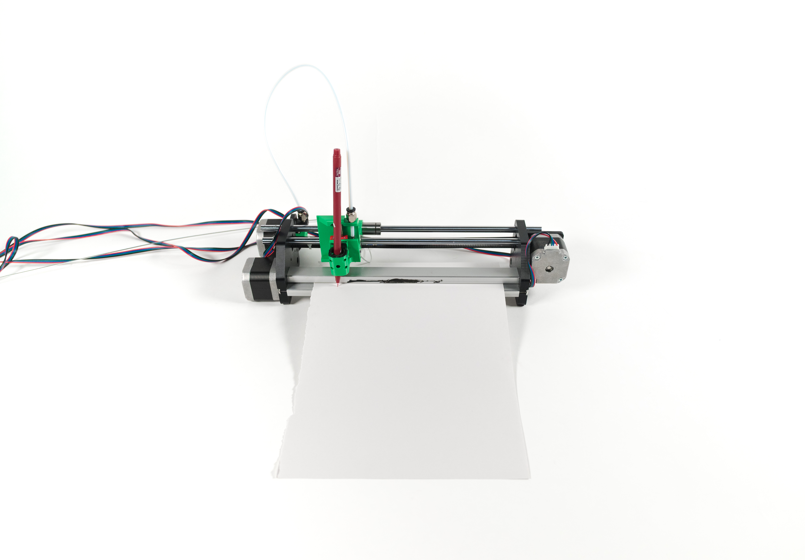
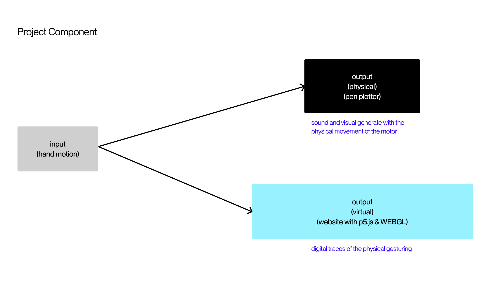
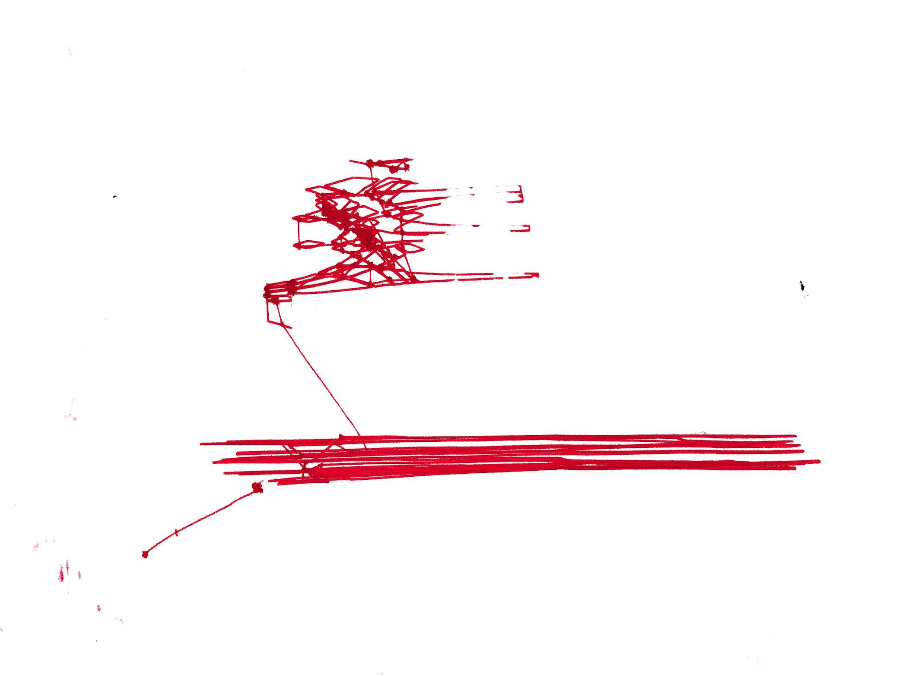
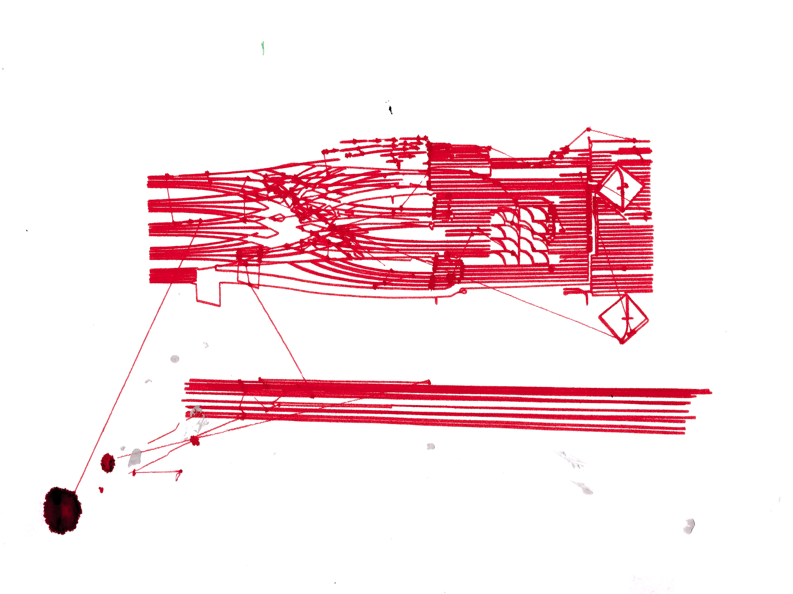
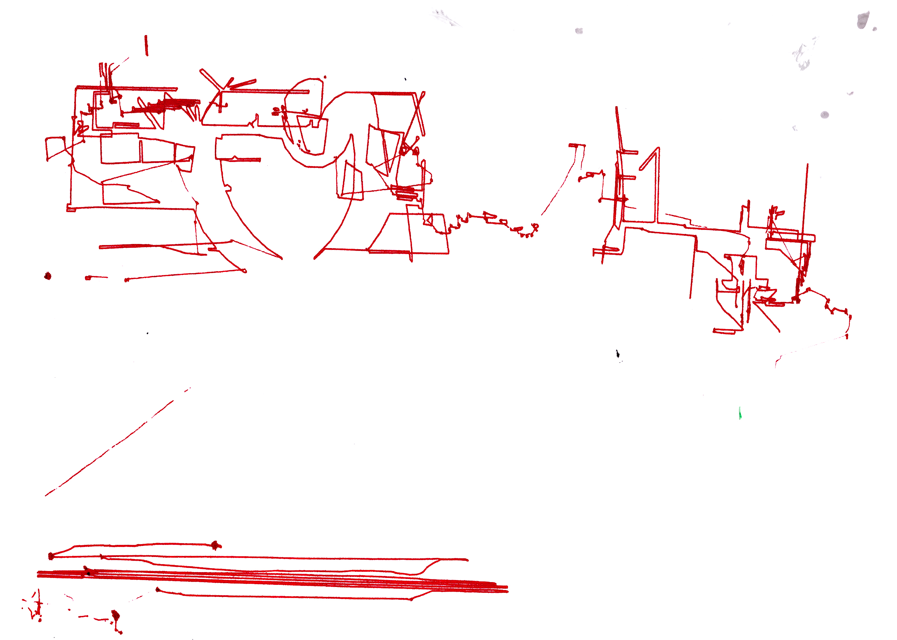
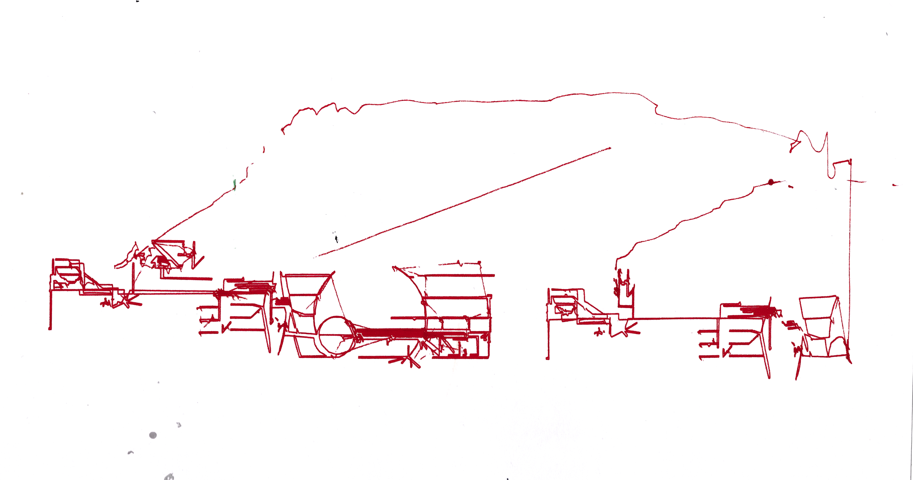
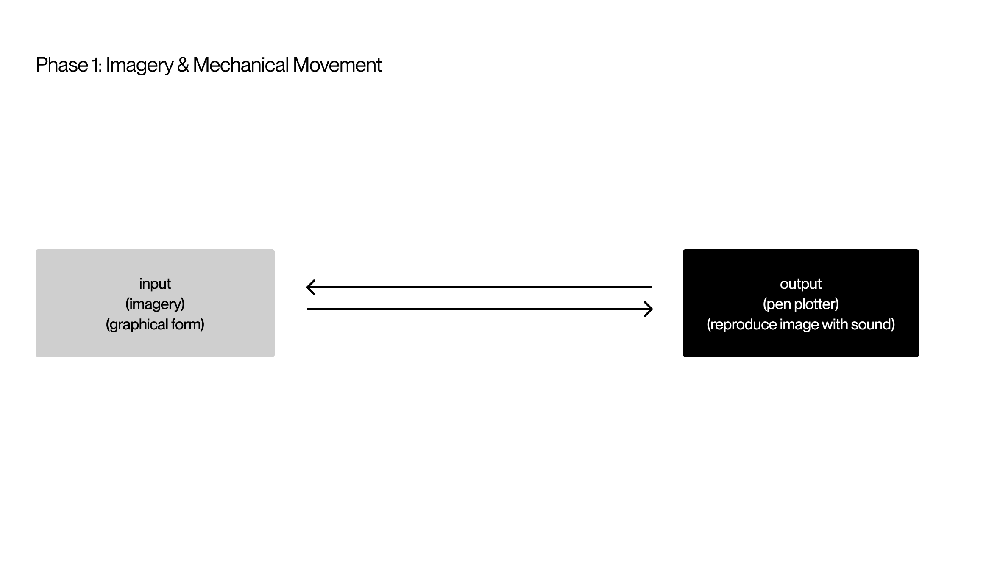
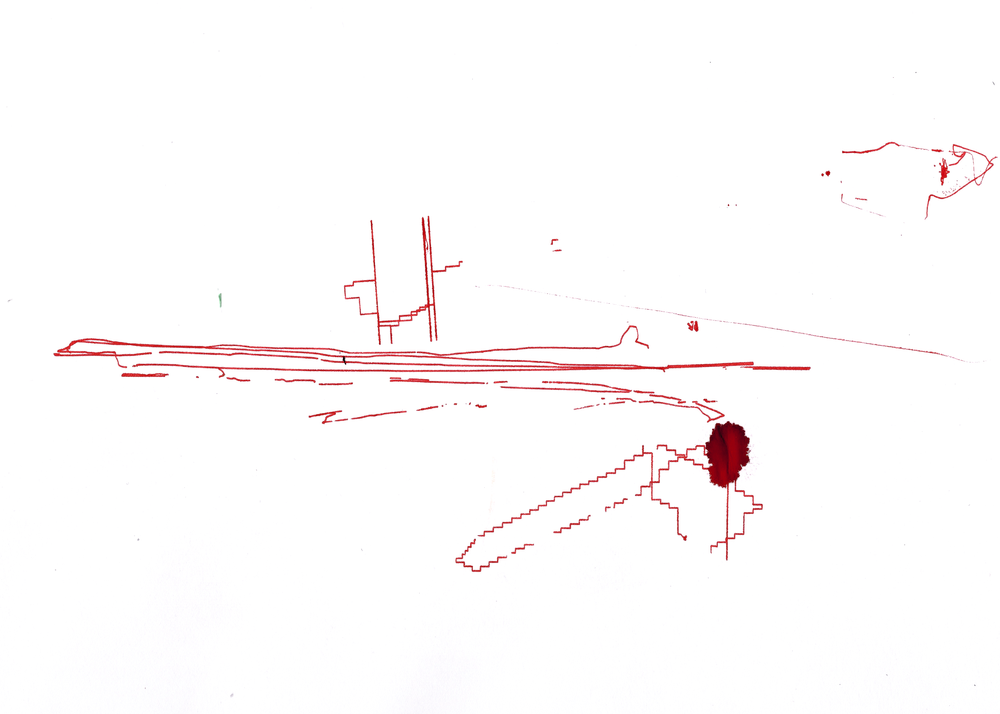
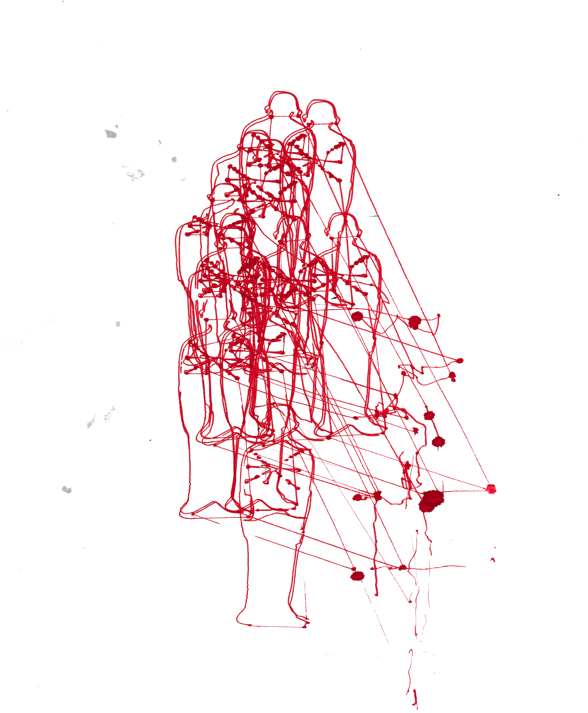

↓
Thinking about the Plotter
for Ambient Interface
CTC, Web / 2025
This project is an extended experiment about sound-making visualizers. Taking the form of a pen plotter(something that is in between the human printing and the digital printing),I want to pay attention to how the movement(labor) defines the sound, and how sound finds traces in a graphical language.
There is something that is so mundane in the rotation of the motors yet precisely pinpoints my most native appreciation to live in an able yet disabled body.






The "failed" printing of Cornelius Cardew's Treatise 04 & Treatise 05




